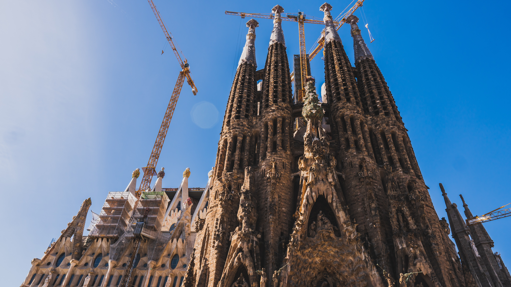

Living in BCN
Map, BCN Guide, neighbourhoods and districts, health care, studying, accessibility, environment, sustainability, family, markets, diversity, assistance, pets.
Go

Work and business
Job market, work, benefits, training, services for entrepreneurs, companies, strategic sectors
Go

Go
What to do in BCN
Agenda, courses, parks, beaches, Magic Fountain, culture, shopping, sport, leisure.
Go

Discover BCN
Places of interest in the city, history, popular culture, urban landscape, publications.
Go

Get Involved
Creation, innovation, transformation, public participation, inclusion, collective projects.
Go